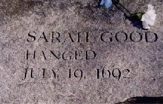

What evil spirit have you familiarity with?
None.
Have you made no contract with the devil?
No.
Why do you hurt these children?
I do not hurt them. I scorn it.
Who do you imploy then to do it?
I imploy no body.
What creature do you imploy then?
No creature. I am falsely accused.
Dialogue based on the examination of Sarah Good
by Judges Hathorne and Corwin,
from The Salem Witchcraft Papers, Book II, p.355
- January 20
- Nine-year-old Elizabeth Parris and eleven-year-old Abigail
Williams began to exhibit strange behavior, such as blasphemous
screaming, convulsive seizures, trance-like states and mysterious
spells. Within a short time, several other Salem girls began to
demonstrate similar behavior.
- Mid-February
- Unable to determine any physical cause for the symptoms and
dreadful behavior, physicians concluded that the girls were under
the influence of Satan.
- Late February
- Prayer services and community fasting were conducted by
Reverend Samuel Parris in hopes of relieving the evil forces that
plagued them. In an effort to expose the "witches", John Indian
baked a witch cake made with rye meal and the afflicted girls'
urine. This counter-magic was meant to reveal the identities of the
"witches" to the afflicted girls.
Pressured to identify the source of their affliction, the girls
named three women, including Tituba, Parris' Carib Indian slave, as
witches. On February 29, warrants were issued for the arrests of
Tituba, Sarah Good and Sarah Osborne.
Although Osborne and Good maintained innocence, Tituba confessed
to seeing the devil who appeared to her "sometimes like a hog and
sometimes like a great dog". What's more, Tituba testified that
there was a conspiracy of witches at work in Salem.
- March 1
- Magistrates John Hathorne and Jonathan Corwin examined Tituba,
Sarah Good, and Sarah Osborne in the meeting house in Salem
Village. Tituba confessed to practicing witchcraft.
Over the next weeks, other townspeople came forward and
testified that they, too, had been harmed by or had seen strange
apparitions of some of the community members. As the witch hunt
continued, accusations were made against many different people.
Frequently denounced were women whose behavior or economic
circumstances were somehow disturbing to the social order and
conventions of the time. Some of the accused had previous records
of criminal activity, including witchcraft, but others were
faithful churchgoers and people of high standing in the
community.
- March 12
- Martha Corey is accused of witchcraft.
- March 19
- Rebecca Nurse was denounced as a witch.
- March 21
- Martha Corey was examined before Magistrates Hathorne and
Corwin.
- March 24
- Rebecca Nurse was examined before Magistrates Hathorne and
Corwin.
- March 28
- Elizabeth Proctor was denounced as a witch.
- April 3
- Sarah Cloyce, Rebecca Nurse's sister, was accused of
witchcraft.
- April 11
- Elizabeth Proctor and Sarah Cloyce were examined before
Hathorne, Corwin, Deputy Governor Thomas Danforth, and Captain
Samuel Sewall. During this examination, John Proctor was also
accused and imprisoned.
- April 19
- Abigail Hobbs, Bridget Bishop, Giles Corey, and Mary Warren
were examined. Only Abigail Hobbs confessed.
William Hobbs
"I can deny it to my dying day."
- April 22
- Nehemiah Abbott, William and Deliverance Hobbs, Edward and
Sarah Bishop, Mary Easty, Mary Black, Sarah Wildes, and Mary
English were examined before Hathorne and Corwin. Only Nehemiah
Abbott was cleared of charges.
- May 2
- Sarah Morey, Lydia Dustin, Susannah Martin, and Dorcas Hoar
were examined by Hathorne and Corwin.
Dorcas Hoar
"I will speak the truth as long as I live."
- May 4
- George Burroughs was arrested in Wells, Maine.
- May 9
- Burroughs was examined by Hathorne, Corwin, Sewall, and William
Stoughton. One of the afflicted girls, Sarah Churchill, was also
examined.
- May 10
- George Jacobs, Sr. and his granddaughter Margaret were examined
before Hathorne and Corwin. Margaret confessed and testified that
her grandfather and George Burroughs were both witches.
Sarah Osborne died in prison in Boston.
Margaret Jacobs
"... They told me if I would not confess I should be put down
into the dungeon and would be hanged, but if I would confess I
should save my life."
- May 14
- Increase Mather returned from England, bringing with him a new
charter and the new governor, Sir William Phips.
- May 18
- Mary Easty was released from prison. Yet, due to the outcries
and protests of her accusers, she was arrested a second time.
- May 27
- Governor Phips set up a special Court of Oyer and Terminer
comprised of seven judges to try the witchcraft cases. Appointed
were Lieutenant Governor William Stoughton, Nathaniel Saltonstall,
Bartholomew Gedney, Peter Sergeant, Samuel Sewall, Wait Still
Winthrop, John Richards, John Hathorne, and Jonathan Corwin.
These magistrates based their judgments and evaluations on
various kinds of intangible evidence, including direct confessions,
supernatural attributes (such as "witchmarks"), and reactions of
the afflicted girls. Spectral evidence, based on the assumption
that the Devil could assume the "specter" of an innocent person,
was relied upon despite its controversial nature.
- May 31
- Martha Carrier, John Alden, Wilmott Redd, Elizabeth Howe, and
Phillip English were examined before Hathorne, Corwin, and
Gedney.
- June 2
- Initial session of the Court of Oyer and Terminer. Bridget
Bishop was the first to be pronounced guilty of witchcraft and
condemned to death.
- Early June
- Soon after Bridget Bishop's trial, Nathaniel Saltonstall
resigned from the court, dissatisfied with its proceedings.
- June 10
- Bridget Bishop was hanged in Salem, the first official
execution of the Salem witch trials.
Bridget Bishop
"I am no witch. I am innocent. I know nothing of it."
Following her death, accusations of witchcraft escalated, but
the trials were not unopposed. Several townspeople signed petitions
on behalf of accused people they believed to be innocent.
- June 29-30
- Rebecca Nurse, Susannah Martin, Sarah Wildes, Sarah Good and
Elizabeth Howe were tried for witchcraft and condemned.
Rebecca Nurse
"Oh Lord, help me! It is false. I am clear. For my life now
lies in your hands...."
- Mid-July
- In an effort to expose the witches afflicting his life, Joseph
Ballard of nearby Andover enlisted the aid of the accusing girls of
Salem. This action marked the beginning of the Andover witch
hunt.
- July 19
- Rebecca Nurse, Susannah Martin, Elizabeth Howe, Sarah Good, and
Sarah Wildes were executed.
Elizabeth Howe
"If it was the last moment I was to live, God knows I am
innocent..."
Susannah Martin
"I have no hand in witchcraft."
- August 2-6
- George Jacobs, Sr., Martha Carrier, George Burroughs, John and
Elizabeth Proctor, and John Willard were tried for witchcraft and
condemned.
Martha Carrier
"...I am wronged. It is a shameful thing that you should mind
these folks that are out of their wits."
- August 19
- George Jacobs, Sr., Martha Carrier, George Burroughs, John
Proctor, and John Willard were hanged on Gallows Hill.
George Jacobs
"Because I am falsely accused. I never did it."
- September 9
- Martha Corey, Mary Easty, Alice Parker, Ann Pudeator, Dorcas
Hoar, and Mary Bradbury were tried and condemned.
Mary Bradbury
"I do plead not guilty. I am wholly innocent of such
wickedness."
- September 17
- Margaret Scott, Wilmott Redd, Samuel Wardwell, Mary Parker,
Abigail Faulkner, Rebecca Eames, Mary Lacy, Ann Foster, and Abigail
Hobbs were tried and condemned.
- September 19
- Giles Corey was pressed to death for refusing a trial.
- September 21
- Dorcas Hoar was the first of those pleading innocent to
confess. Her execution was delayed.
- September 22
- Martha Corey, Margaret Scott, Mary Easty, Alice Parker, Ann
Pudeator, Wilmott Redd, Samuel Wardwell, and Mary Parker were
hanged.
- October 8
- After 20 people had been executed in the Salem witch hunt,
Thomas Brattle wrote a letter criticizing the witchcraft trials.
This letter had great impact on Governor Phips, who ordered that
reliance on spectral and intangible evidence no longer be allowed
in trials.
- October 29
- Governor Phips dissolved the Court of Oyer and Terminer.
- November 25
- The General Court of the colony created the Superior Court to
try the remaining witchcraft cases which took place in May, 1693.
This time no one was convicted.
Mary Easty
"...if it be possible no more innocent blood be shed...
...I am clear of this sin."
|